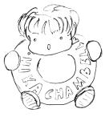

First of all you have to acquire through a scanner or something similar your sketch. It doesn't necessitate to be truly a black and white image (2 colors), often a well contrasted grayscale image is better (use contrast autosketch or/and the brightness-contrast tools).

Create a new image of the wanted size and place below the sketch layer a pure white background layer. Now turn the mode for the sketch layer into multiply. From now the sketch layer will stay forever over the others.
Now let's start playing with colours!
Create a new layer and call it "Details". In this example I've used it for painting the blue doughnut. As you can see, thanks to the multiply mode,
the black lines of the sketch are kept while the white zones are "transparent". Don't be too afraid of going outside the shapes, in the next steps
we will see that some stuff will "disappear", covered by other layers.
Create a "Skin" layer over the "Details" one. Here I've coloured the skin and the shoes with the paint tool and the airbrush. For first you should fill with the base colour the shapes (use a paint tool), then apply (with the airbrush) darker shades on the edges and brighter ones over the cheeks.
The "Details#2" layer is used for some extra details like the white text over the blue doughnut. I've used it because I want be able to change and retouch the doughnut shading without the white text (that should stay as brighter as possible).
The "Hairs" layer contains ... well, what do you think will contain a layer called "Hairs"? Yeah, right answer! ;P Please notice only that this layer is below the sketch one but over the others, so the extra painted zones of the "Skin" layer are covered by this one. I.e. you can add some shadows over the forehead by painting over these zones.
Finally I've added a "Shadows" layer for making the doughnut and the other elements less flat. This is the end. Still reading here? Now it's your turn! Quickly open the GIMP and start playing! ;)
The original tutorial can be found here.